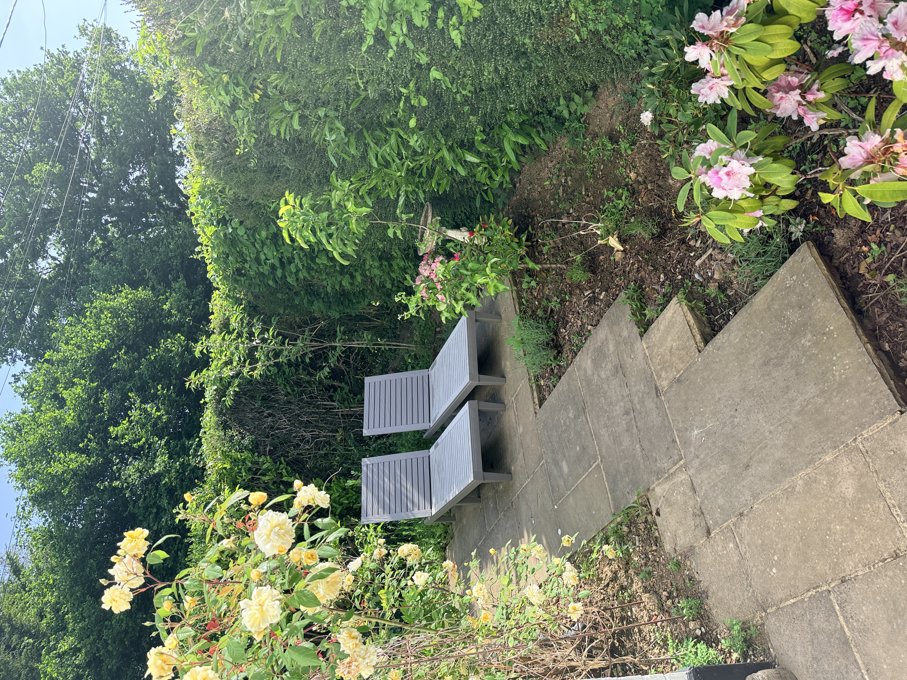
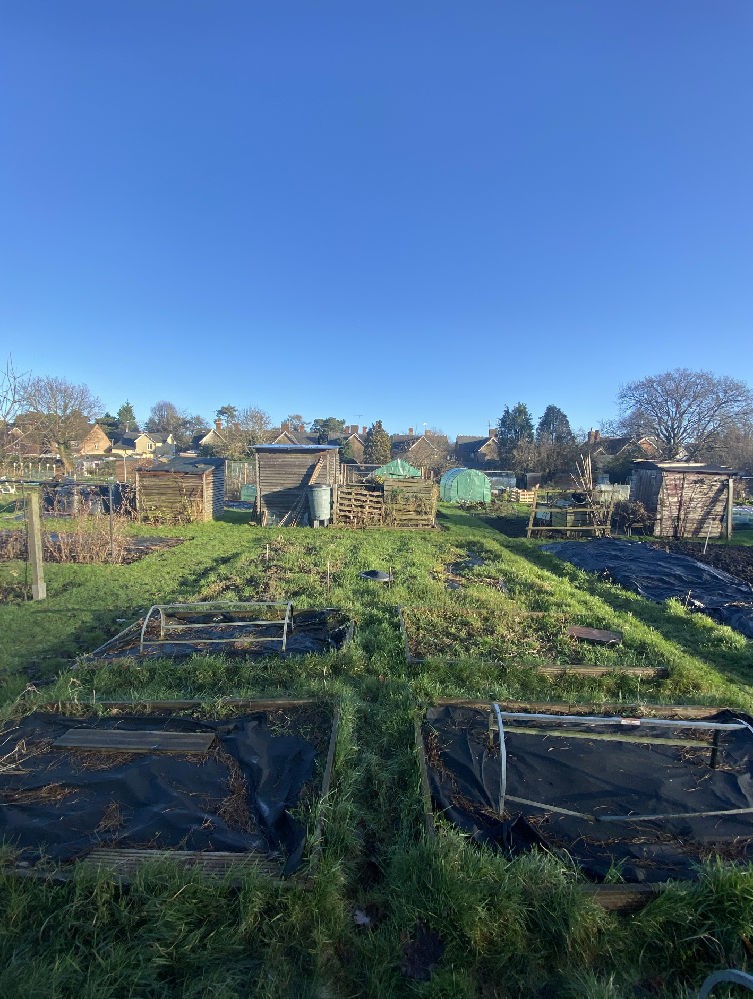
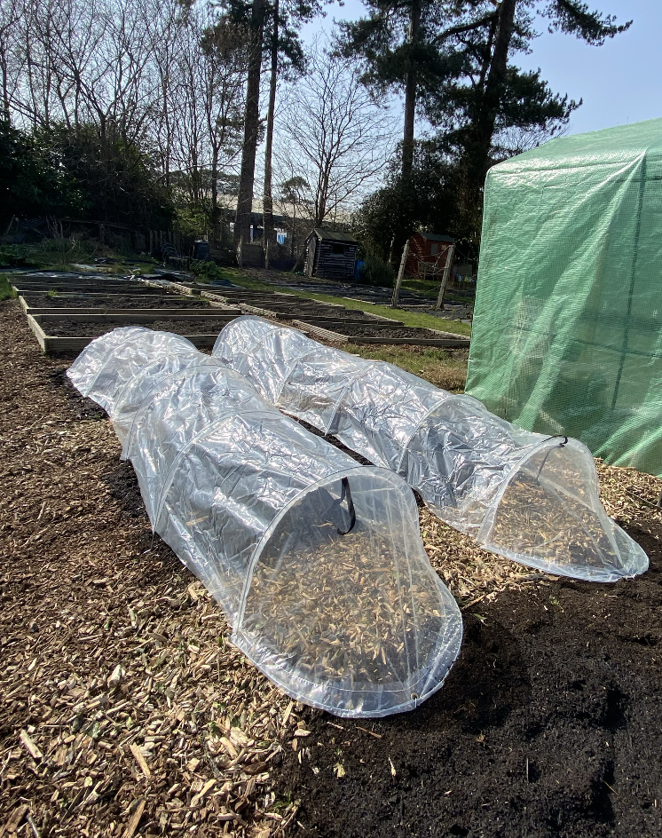

Personal practice / Horticulture
Garden Design, Horticulture & Maintenance.
Eleven years of hands-on gardening, including petrol mowing, strimming, hedge maintenance, planting, cultivation and garden improvement across residential gardens, an allotment and Imberhorne Farm Estate.
My gardening experience is practical and sustained: mowing grass with a petrol lawnmower, strimming larger areas, trimming hedges, managing planted borders, caring for established roses and climbers, preparing growing beds and raising seedlings. Alongside my design career, I maintained a private garden in East Grinstead for eight years and a private garden in the Ashdown Forest for two years and the Imberhoorne Farm Estate Gardens allotment for one year. I am now seeking to bring that commitment, attention to presentation and willingness to learn to a professional gardens and grounds team.
Private Garden, East Grinstead
I designed and created this garden entirely from scratch, selecting the planting and fruit trees to make the most of a small space. My aim was a scented ornamental garden that would also be productive throughout the year, with flowering plants alongside fruiting varieties. The limited space required careful planning, thoughtful plant positioning and frequent maintenance to keep growth manageable and the garden looking its best.


Hands-on involvement: designing the garden from scratch, selecting scented ornamental plants and fruit trees, planning for year-round productivity, planting, pruning and frequent maintenance in a compact space.
Private Garden, Ashdown Forest
My residential garden in the Ashdown Forest, developed and maintained through hands-on work. These videos show the garden’s overall presentation and established planting, including climbing and rambling varieties trained through the space.


Hands-on involvement: garden design, planting, regular hedge trimming, pruning and ongoing maintenance. Roses are a particular passion of mine, especially scented David Austin varieties and rambling and climbing roses. Over the years I have planted, trained, pruned and maintained many roses, considering their aspect, support structures and how they can be displayed alongside other flowers and climbers, including wisteria. I have also successfully transplanted 25 David Austin roses of varying ages between my residential gardens and different soil conditions.
Imberhoorne Farm Estate Gardens
For one year, I improved and maintained a quarter allotment at Imberhorne Lane using Charles Dowding’s no-dig method. This involved preparing growing beds and paths, erecting a greenhouse, raising seedlings, protecting young plants with cloches and cultivating varieties of potatoes and radishes.




Methods and crops: no-dig cultivation, prepared growing beds, seedling propagation under cover, potatoes and radishes. I also regularly mowed the land around the allotment with a petrol lawnmower.
Imberhorne Farm Estate
During spring and summer 2022, I volunteered unpaid at Imberhorne Farm Estate, taking responsibility for managing the allotment, gardens and chickens. My work included caring for the outdoor areas, preparing the vegetable plot and organising a new composting system.
Composting infrastructure
Managed and organised the build of a compost-bin system where there had not previously been one, establishing a dedicated area for composting.
Vegetable plot preparation
Applied woodchip to the vegetable plot in preparation for no-dig growing and planned crop rotation.
Strimming & upkeep
Strimmed the chicken-coop area and carried out outdoor garden maintenance.
Mixed growing environment
Worked within a farm setting that included an orchard, vegetable growing space and chickens, building experience of maintaining different outdoor areas.
Where my love of gardens began
My interest in horticulture began in childhood, growing up at a manor house in the Ashdown Forest and helping my parents care for its two-acre grounds.
My father introduced me to the orchard, ornamental trees, flowering plants and the practical care involved in maintaining a large garden. I developed an early interest in garden design, reading about planting schemes, flowering seasons and propagation, and learning by taking an active part in caring for the grounds.
That interest has continued through visits to gardens including Sissinghurst, Wakehurst, Kew and RHS Wisley, and trips to the RHS Chelsea Flower Show over the years. Travelling has broadened my appreciation of planting traditions, from botanical gardens in Rio de Janeiro and Montréal to learning about rice planting in rural Japan.
I am especially drawn to native, ornamental and fruiting trees, scented climbing plants and carefully maintained landscapes—whether an open field, a productive garden or a small, formally arranged space.

Practical gardening skills
Examples from my own gardens and allotment that relate to the maintenance, planting, nursery and restoration work involved in caring for a larger estate.
Grass cutting & grounds maintenance
Regular mowing with a petrol lawnmower, including grass around an allotment, and strimming larger areas around a chicken coop and lanes in the Ashdown Forest.
Hedges, pruning & presentation
Regular trimming and maintenance of hedges at my second residential garden, alongside ongoing pruning and care of planted borders, roses and established ornamental plants.
Planting & plant care
Hands-on planting, training and long-term care of scented David Austin roses, climbing and rambling varieties, and mixed planting with climbers such as wisteria. Successfully transplanted 25 David Austin roses of varying ages between gardens with different soils.
Nursery & cultivation
Raised seedlings in a greenhouse and under cover, used cloches for protection and cultivated potatoes and radishes using prepared, no-dig growing beds.
Garden improvement & restoration
Planned and improved residential garden areas and transformed a quarter allotment with new growing beds and paths. The photographs show the starting conditions, ongoing work and developed spaces.
Farm gardening & practical organisation
During spring and summer 2022, I voluntarily managed the allotment, gardens and chickens at Imberhorne Farm Estate. This unpaid work included organising the construction of a new compost-bin system, strimming the chicken-coop area and preparing the vegetable plot with woodchip for no-dig cultivation and crop rotation.
Teamwork & supporting others
In my professional design career I have trained five colleagues in Figma and mentored a graduate over seven months, working collaboratively and sharing practical knowledge. This is transferable experience in supporting others, although I have not supervised a professional gardening team.
Grounds maintenance in practice
Short videos documenting hands-on hedge trimming and petrol lawnmower use.
My experience includes residential gardens, an allotment and work at Imberhorne Farm Estate, with hands-on powered mowing and strimming. I have not claimed golf-course or large hotel-estate maintenance experience and am keen to develop those specialist skills in a professional grounds team.